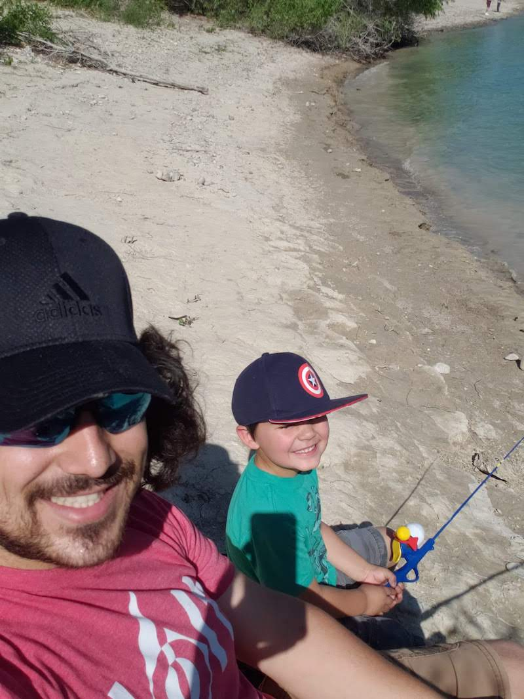
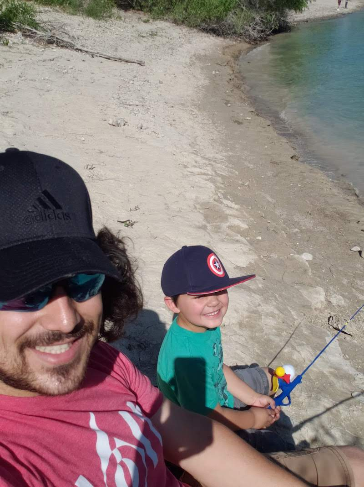

My journy to becoming a Web Developer started after I began working at a software company as a phone sales rep. In the past, if you had asked me what I thought it would take to be a Web Developer, I would have said it had something to do with a 4 year degree. As I got to know the wonderful developers at this company, I soon realized that there were many who had taught themselves how to code or had gone to a bootcamp to learn. I took this as a sign to do some digging. I began obtaining resources to learn about the many programming languages. I even started developing my first HTML and CSS project as a blog website about my family. As I watched the website come to life with the code I was learning, I became excited to see what my hands could build.
It took some time for me to become confident in making a career change. In 2022, my wife and I decided it was time to pursue a career that brought me joy, allowed me to be creative, and would supply a great opportunity for me to continually grow. I registered for DevMountains Web Development program. Throughout this program I learned even more about the development world, the languages that are available, the different skills and opportunities a development career provides. This only fueled my desire even more. As I progressed through the program, I was even more excited to see the diffrent skills I was developing and how those can benefit the world.
If I am not at my computer coding, you can find me enjoying some hobbies. In my pass time, I enjoy working on wood projects, fishing with my family, going on hikes, watching movies at home and in the theater, and exercising.
Becoming a developer has opened my life up to a slue of posibilites for me and my family. I cant wait to see how you and I can help solve the worlds problems one line of code at a time!


 
